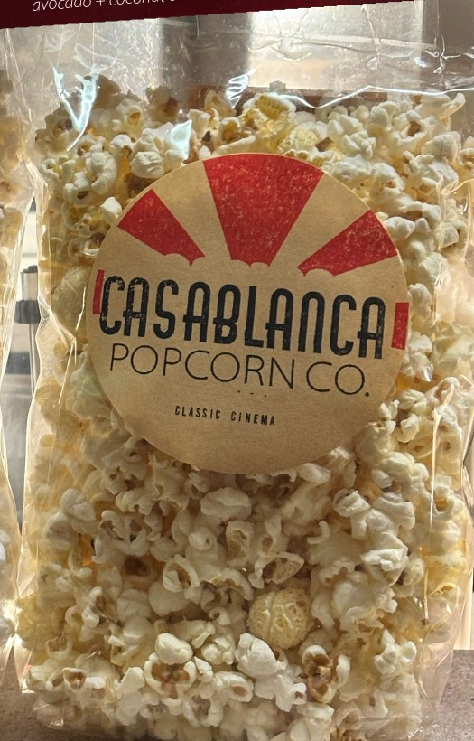
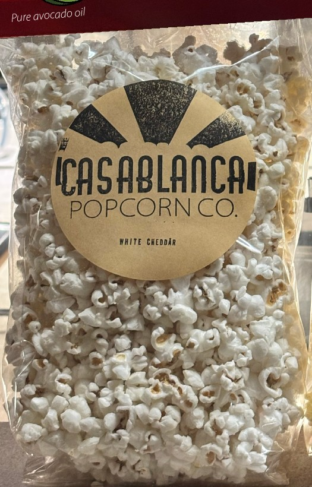

The original
Classic Cinema
Inspired by the golden age of cinema, our yellow butterfly popcorn has a hearty classic crunch and is popped in coconut and avocado oils for that timeless movie night flavour.

Our story
Casablanca Popcorn is inspired by the golden age of movie-going—when a night at the cinema felt like an event.
Our popcorn
Two signature flavours, made in small batches for movie night or a stroll through the market.

The original
Inspired by the golden age of cinema, our yellow butterfly popcorn has a hearty classic crunch and is popped in coconut and avocado oils for that timeless movie night flavour.

Creamy and savoury
Light and airy white hulless popcorn with a delicate crunch, finished with savoury white cheddar for a creamy cheesy flavour.
Our Ontario-grown kernels
We source our kernels from Uncle Bob’s Popcorn, a family-run Ontario grower that has been growing popcorn since 1985. They are also Canada’s only grower of specialty white hull-less popcorn—the light, delicate variety used for our White Cheddar.
Meet Uncle Bob’sBehind the name
Grand Art Deco theatres, glowing marquees, velvet curtains, and freshly popped popcorn—that is the feeling we are bringing back.
Our name is inspired by Casablanca, an enduring film made to be discovered and shared. Its timeless quality inspires every batch.
We pop with coconut and avocado oil in small batches for classic theatre flavour, crisp texture, and careful attention to every bag.
Our popcorn is produced in Kitchener and sold at St. Jacobs Farmers’ Market in Peddler’s Village.
Say hello